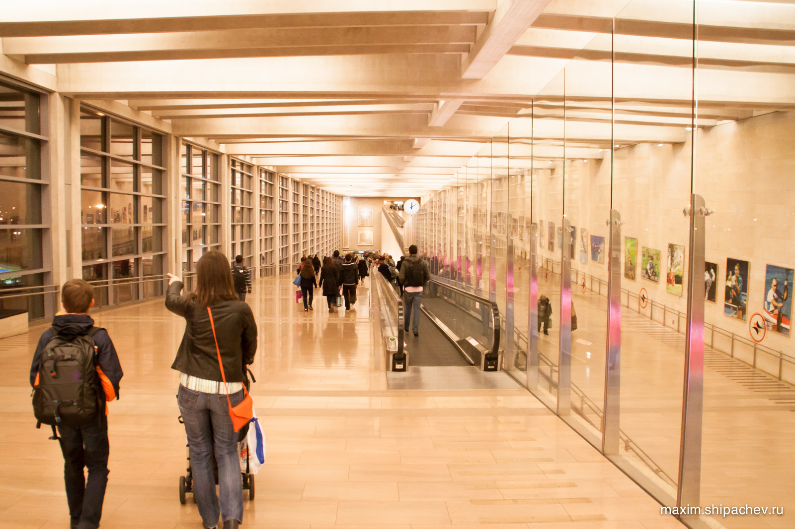

Рейс SU 1461 Новосибирск-Москва вылетает из Новосибирска в 18:45, мы запланировали выезжать из Кемерова в 12 часов. Конечно выехали на 40 минут позже.
Предполагая, что едем как бы в лето, по дороге фотографируем «на память» зиму.
Машину планируем оставить на платной стоянке у аэропорта. Правда весной мест не было совсем, пришлось оставлять на самой дорогой, за 300 рублей в сутки. Зимой получается оставить на той, которая слева от въезда — 200 рублей за сутки парковки. +2000 рублей на бензин до Новосибирска и обратно, и всё равно далеко до разницы примерно в 20 тысяч рублей, если лететь из аэропорта имени космонавта Леонова.
Приезжаем почти без запаса, Новосибирск уже начал стоять в предновогодних пробках 6-7 баллов в Яндекс.Пробки. Летим до Москвы, там пересадка с разницей в 1:50, что тоже впритык.
В начале первого часа ночи нас встречает аэропорт Бен Гурион Тель-Авива.

Аренда машины
Идём оформлять машину в прокат, прокатные фирмы находятся на втором этаже аэропорта и находятся легко, нам в AVIS. Называю номер брони, диалог на английском по-большому счёту кое-как складывается, пока не переходим к обсуждению страховки. На помощь приходит русскоговорящий сотрудник проката и окончательно расставляем все точки.
Отдаю карту, на которой блокируют франшизу, которую обещают вернуть через сутки, после сдачи машины обратно. Кроме возможного ущерба с франшизы так же спишут стоимость проезда по платным магистралям и возможные штрафы.
Ещё один нюанс возникает с детским автокреслом. Оно предоставляется «при возможности» и его стоимость, $6 в сутки, также вычтут из франшизы. Получаем ключи, идём на парковку.
Парковщик смотрит бумаги и пригоняет нашу «ласточку». Облезлую спереди «ласточку». Без одного коврика.
С автокреслом возникает ещё один нюанс. Но оно одно, а без него в чужой стране неуютно. После короткого разговора парковщик скажет, что за него не нужно будет платить. Обманет.
Описываем все повреждения в специальный лист, получаем код сигнализации для запуска двигателя и инструкцию по возврату. Позже я выясню, что в машине нет домкрата, балонника, не работает правый стоп-сигнал. Ещё она перестанет заводиться, но это будет чуть позже.
Разгадываем небольшой ребус как выехать с парковки и вот уже шуршим шинами и жадно смотрим на знаки.

Почти с первого раза получается вбить адрес нашей гостинице в навигатор и теперь можно спокойно ехать по опустевшему Тель-Авиву.
В нашем плане был небольшой просчёт, о котором мы, в общем-то знали, но решили действовать по обстоятельствам. Дело в том, что прилетали мы в ночь, а заселение в гостиницу планировалось только в час дня. Я не был уверен сколько времени мы будем выбираться из аэропорта и добираться до отеля, поэтому платить за несколько часов как за сутки пожалел. Выбрались, к сожалению и счастью, быстро. Хозяин Sea Land Apartments Shlomi Gottesman нам даже предварительно отправил письмо с инструкциями, что делать, если мы приедем позже — с кодом домофона и с кодом сейфа, где будут лежать наши ключи. Но мы приехали не позже, а раньше. Я даже зашёл в отель, даже открыл сейф, там даже были два ключа, но не наши.
Первая гостиница в Тель-Авиве
Дети уже спят, мы уже тоже хотим. Прокатившись по городу, решаю припарковаться у нашей гостиницы и переночевать в какой-нибудь по соседству. Отправляюсь на поиски. Через улицу вижу приветливо открытые двери гостиницы Gordon Inn. Говорю, что нам только переночевать, находим номер за три тыщи — то, что нужно. «Откуда вы?» — спрашивает администратор, — «We are from Russia, Siberia» — «Oh! Kolodilnik!». Кроме денег администратору нужен ещё паспорт и листок контроля на границе. Что характерно, листок контроля не похож на документ, который нужно хранить, и нам, в общем-то, повезло, что мы их не выбросили. Его будут требовать во всех гостиницах.
Возвращаюсь за своими, идём спать.
Поутру распахиваем окна Тель-Авиву.
Рекомендовать Gordon Inn стоит только для нетребовательных путешественников вроде нас, которым только переночевать. Дёшево и сердито.
Но за наши три тыщи нам был положен ещё и завтрак, завтрак радует теплотой и душевностью.
После завтрака идём поговорить в нашу гостиницу, всё-таки до заселения ещё слишком рано.
Напротив нашей гостиницы — велопарковка.
Система аренды велосипедов в Тель-Авиве
Система аренды велосипедов в Тель-Авиве называется «Тель-Офан». Создал и содержит её муниципалитет «в целях поощрения использования велосипедов в качестве средства езды по городу и в рамках политики, направленной на использование экологически чистых транспортных средств».
Таких велосипедных стоянок в Тель-Авиве очень много, вы можете взять велосипед на любой из них и вернуть так же на любой (если там будет место, если не будет, придётся искать следующую).
Сутки пользования таким велосипедом стоят 17, 23 шекеля (будни, выходной). То есть, примерно 160-220 рублей. За неделю придётся отдать 70 шекелей — примерно 550 рублей. За год — 280 шекелей.
В городе размещено около 150 таких велостоянок.
На фотографии видна слева наша машина. Несмотря на то, что мы припарковались перед знаком мы серьёзно нарушили правила парковки. Дело в том, что кроме знака большое значение играет ещё и раскраска бордюров, но об этом позже.
В отеле говорят, что номер будет готов только к 12-13 часам, поэтому едем покататься по городу.
Тратим пару часов и едем искать платную парковку у отеля, к счастью она в 100 метрах, на улице Ману. Парковщика зовут Борис. Борис, увидев меня говорит «Здравствуйте». «Пятый день в подарок» — говорит Борис и берёт с нас за 5 дней 20 шекелей. «Можете приезжать и уезжать когда захочете».
Заселяемся в гостиницу, идём на пляж. Мочить кеды в Средиземном море.
На обратном пути ищем где бы перекусить. Неподалёку от гостиницы находим кафе, где готовят шакшуку. Это вроде как национальное блюд из яиц жаренных в соусе из помидоров, перца, лукa и приправ. Шакшука нам нравится.
Заходим передохнуть в гостиницу, потом идём гулять уже до вечера.
Доходим до большого магазина Дизенгоф-Центр на улице Дизенгоф, заходим и туда.
Возвращаемся в отель, по пути фотографируя мусорку, как образец культурного различия. Таких мусорок в Тель-Авиве стоит довольно много. Как видно, это контейнеры предназначенные для сбора пластиковых отходов. Далёкие люди, не знают, что можно скидывать весь мусор в одну кучу.